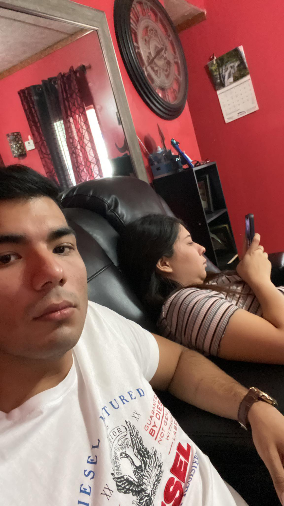
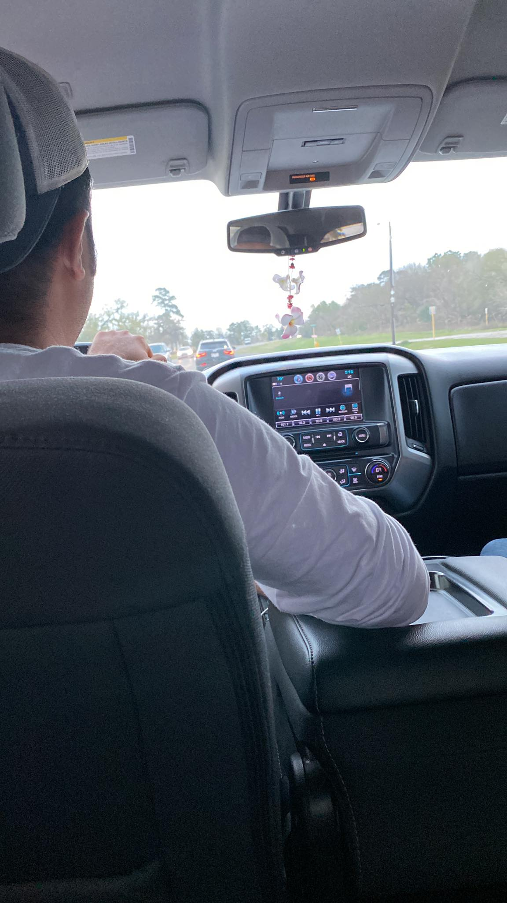
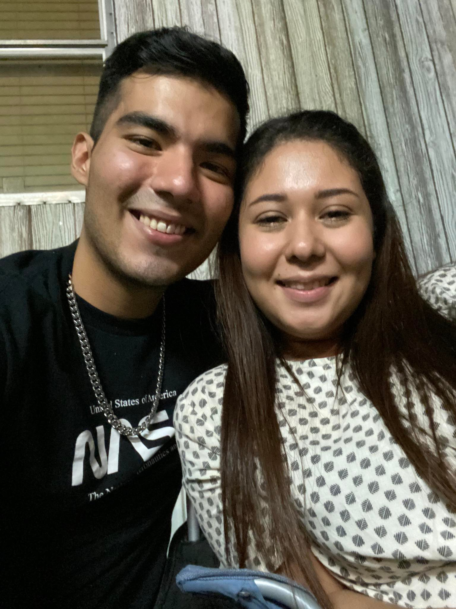
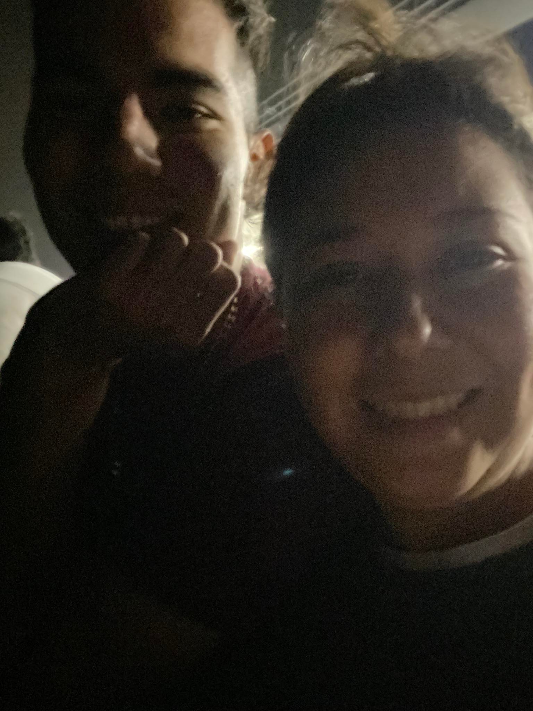
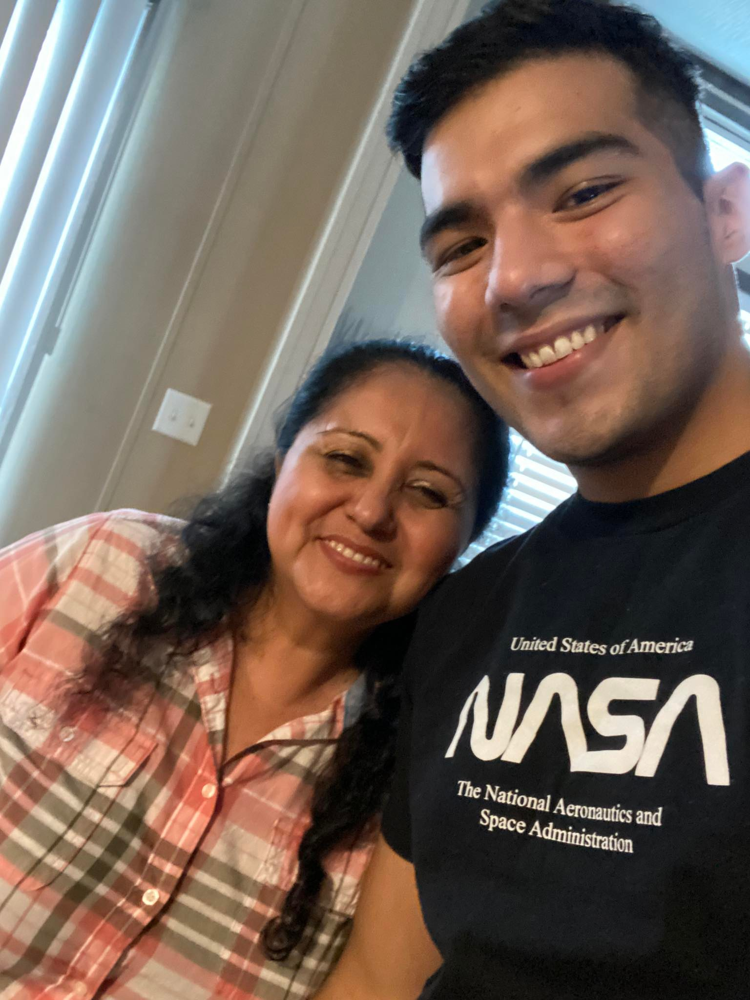
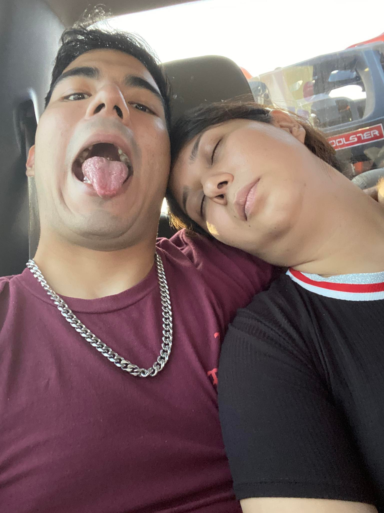

Viaje a Houston
Bien, llegamos a nuestro segundo viaje. El destino nos marcaba un lugar más lejos a 6 horas de distancia, pero este viaje sería diferente… después de casi dos años volverías a ver a tu familia y eso me llenaba de mucha felicidad pero significaba otra cosa al ir, conocería a tu familia y eso, era algo que quería desde hace ya mucho tiempo. Hay cosas en la vida de todo novio que tienen una importancia sobre todas las demás, y el conocer a la familia de la novia es una de ellas, por lo que este viaje era sumamente importante para mi, si era disfrutar con mi novia, pero era también abrir mi vida a nuevas personas.
Comenzamos un Jueves muy temprano con una de mis muchas cosas, las llaves, pero sabes era tan temprano que ni recuerdo mucho. Ni siquiera el hecho de que al ire a dejar al cerrajero maneje en una carretera oscura con Dany y el cerrajero hablando de mañosos. Después de un tiempo finalmente comenzamos nuestra travesía, la fila era eterna pero no por eso aburrida, yo bajo los efectos de la pastilla y tu viendo tus reels en el celular, mi paisaje favorito de ver. Después de algunas horas cruzamos, y después de tener nuestros permisos y de desayunar y comprar nuestros doritos y cheetos, empezamos.
El camino era nuevo para mi, de nuevo, la plática no fue mucha, pero lo que hablamos fue un deleite yo con mis preguntas bobas y tú hablándome de lo que pensabas. Son momentos que a uno nunca se le olvidan. Recuerdo que cuando fuimos a la central de autobuses dijiste que te gustaría regresar a Houston en la carretera y ahora solo unas semanas después lo estábamos haciendo, en nuestro propio auto, como pareja. Y si lo piensas, la última vez que tomaste ese camino, decidiste tomar una decisión importante y regresar con tu familia. También nos pudimos conocer. Y ahora de vuelta ahí, éramos ya pareja viajando juntos, con tu familia frente a nosotros. Supongo que la vida hace cambios increíbles.
Después de horas y algunas paradas, decidí ceder el volante a Dany. Y entonces vino talvez mi momento favorito, te acostaste sobre mis piernas y escuchamos juntos música, siempre digo que lamento mucho que no puedas ver a través de mi ojos porque al escuchar la música y verte dormir me hizo sentir una paz increíble. Que estoy haciendo lo correcto con mi vida, que estoy en el lugar donde debo de estar. Y llegamos.
El ambiente era nuevo para mi, estaba nervioso. Al ver llegar a tu tío y recibirme con tanto cariño me hizo entender que estaba sobrepensando las cosas que todo seria genial y al darme el la bienvenida a la familia entendí que solo debía soltarme, poco a poco todos los tios fueron llegando cada uno regalandome una sonrisa, dándome a entender cómo eran y al verte tan feliz saludando a todos me lleno de mucha felicidad. La noche fue hermosa, todos riendo, si bueno tomando jaja, pero pura alegría. Y sin más, Celika nos llevó a su casa donde por mi cansancio no pude dar más y caí rendido pero feliz. Si algo me llevo de ese día, era que por encima de todo amor, mi curiosidad era Celika, se que es la tia con la que más te llevas asi que queria conocer a la mujer que te apoyó cuando pasabas por un momento delicado. Pensé que tal vez no me veria bien o que pensaría que no soy un buen muchacho, pero nada más lejos de la realidad, de inmediato me recibió con los brazos abiertos y abrimos un pequeño lazo que al día siguiente usamos.
El segundo día, todo fue más tranquilo, lo empezamos llendonos de shopping y disfrutando de la compañía de Damaris y un buen blizzard. Al llegar a casa, tocaba la segunda pachanga y de nuevo todos fueron llegando, ahora todavía más sueltos Chucho diciendo “hey, vamonos a comprar cosas”, y yendo en su camioneta el, Tavo, Meme y yo con música bien recio. No tenía ni 24 horas de conocerlos pero ya estábamos disfrutando como no te das una idea.
La noche fue cayendo y todos pasamos un increíble rato, claro contigo sobre todo comiendo juntos pero era increíble como tal vez tenía que entrar a algo y al yo quedarme solo alguien se me acercaba a platicar y a pasar un buen rato. Si, tomando de nuevo jaja. Esa noche también pasó algo que supongo tenía que pasar o tal vez no, pero pasó. Al quedarme yo solo con Celika, decidimos hablar un poco más serios de varias cosas pero terminé tan tranquilo cuando me dijo “eres un buen hombre Moy, veo lo atento que eres con mi Diana, se ve que si la quieres, me alegro que estén juntos” mientras nos tomábamos una cerveza. No me quedó más que agradecerle y terminamos la noche.
El tercer día no dejo de ser menos bello, las motos, el ferri, la playa. Siempre a tu lado, el viaje fue algo largo pero sumamente hermoso. Fue la primera vez que manejé una moto, tu sabes, ni en bicicleta se andar entonces sentí como volar y al ir detrás de ti y verte de loca acelerarle y que me encajaba la defensa de atrás en mis nalgas huesudas fue otro de mis momentos favoritos. En la playa, aparte de las motos y de disfrutar la compañía de quienes a la que considero mi hermosa familia también pasaron muchas cosas bonitas, ver el mar junto a ti, y un momento personal, fui a caminar viendo el mar y pensé en todo lo que he pasado y en donde estaba, me detuve y solo vi el mar, después voltee a ver la camioneta y te vi sentada y agradeci a Jehova al darme a tan especial mujer, pase de ser un hombre triste a uno agradecido.
De vuelta en casa, entendí que todo estaba terminando, seria dormir y despedirnos. Pero estaba más que contento, todo había salido hermoso. Ya no era como en monterrey en el que me preocupaba por que todo saliera bien, no, solo era disfrutar y así fue. Despedirme de todos pero no para siempre, si no entender que era el primer viaje de verlos de muchísimos que hare a tu lado por el resto de mi vida. Empecé una nueva etapa en mi vida, y me encanto. El viaje de nuevo fue largo, pero estábamos en Reynosa y todo había terminado, pero no por mucho. Volveremos.
Diana, mi amor, quiero agradecerte de todo corazón el haberme incluido en este viaje. Tu familia es hermosa, cada persona con un corazón enorme, con una sonrisa siempre, el conocerlos ha sido uno de los mayores placeres de mi vida, los quiero muchísimo a cada uno de ellos, desde el minuto uno me extendieron los brazos, me hicieron sentir uno de ellos. Paty, Chucho, Silver, Celika… todos son increíbles, personas asombrosas a las que quiero muchísimo y siempre querré y les regalare lo mejor de mi. Volveremos pronto mi amor, fue un placer compartir este viaje contigo, vamos por más, los volveremos a ver pronto, te amo con toda mi vida.
Te ama, tu novio.